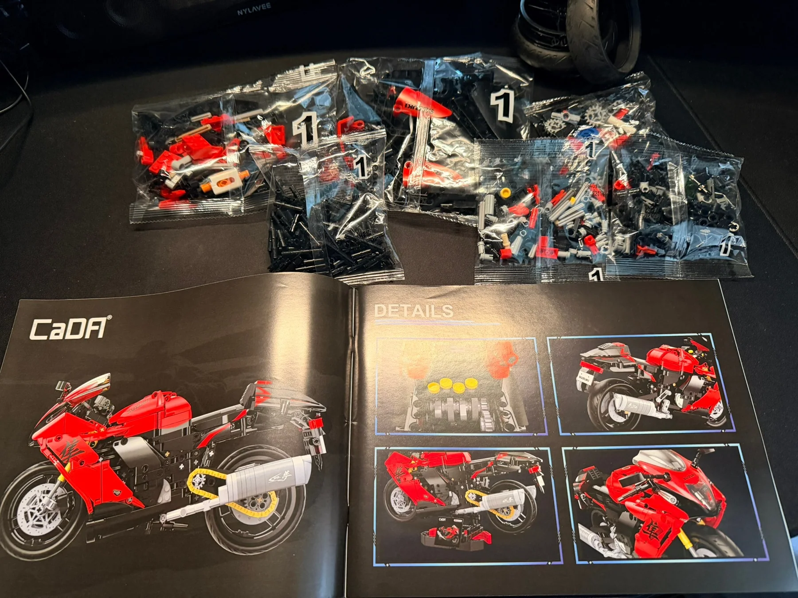
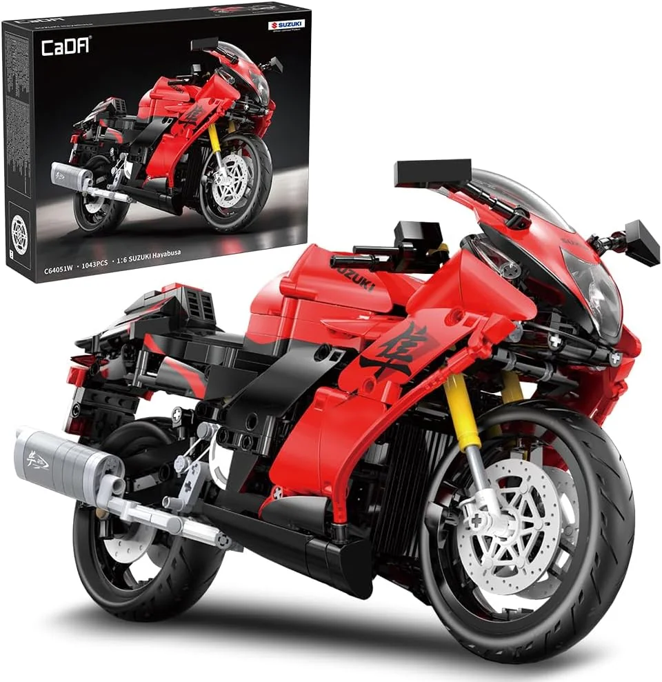
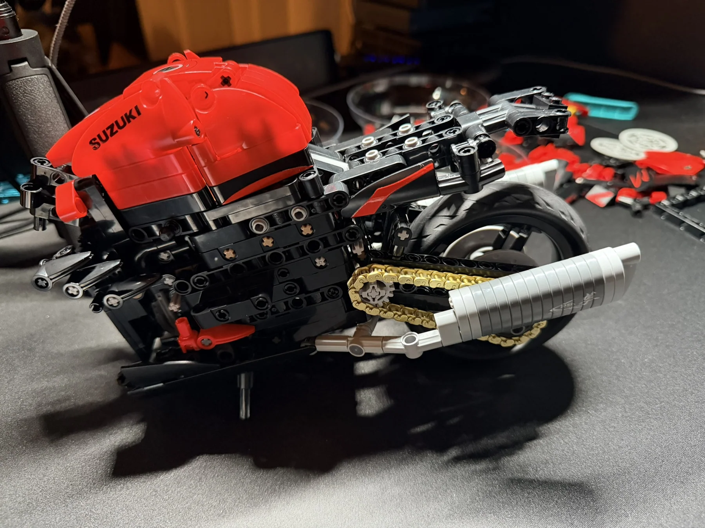
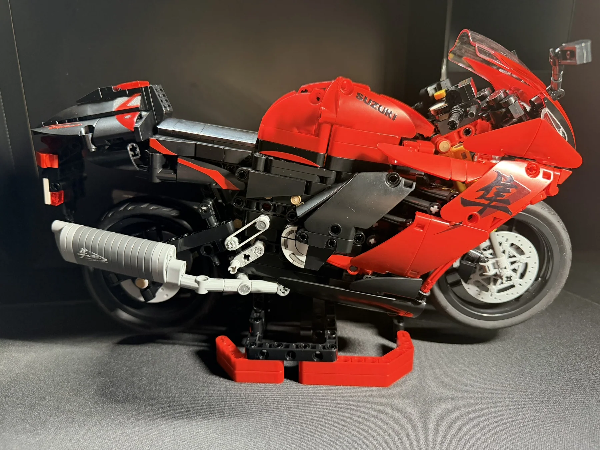
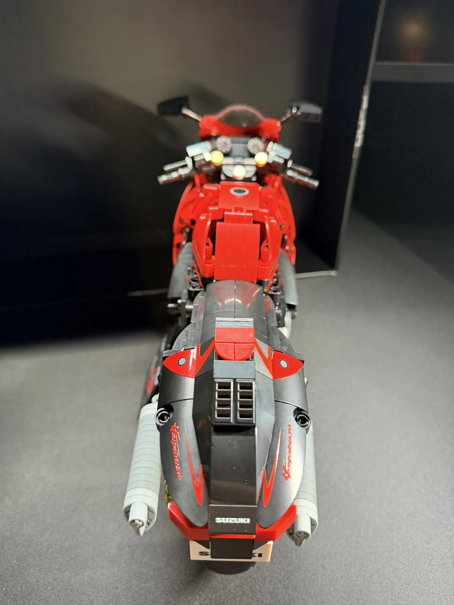

CaDA Suzuki Hayabusa
My first CaDA set brought a different approach to sorting parts, a rewarding mechanical challenge, and a sharp red Suzuki Hayabusa to display at the end.

A different kind of build experience.
This was my first CaDA build, and right from the start it felt a little different. Instead of a straightforward sequence of bags numbered 1, 2, 3 and so on, the first stage included several separate bags marked 1. It took a little more organization, but that also made the process more challenging and fun.
The best part was watching the gearing and mechanical sections come together piece by piece. Seeing how everything connects before the finished bodywork goes on is exactly what makes these builds so enjoyable.
One stage, several bags.
The first stage came with multiple bags marked 1 rather than one single bag for each step. It was a new approach for me and made sorting the pieces part of the challenge.


Watching the gearing come to life.
Building up the motorcycle's frame and drivetrain was a highlight. With the body panels still off, the gearing, chain and exhaust assembly are easy to appreciate. This was the stage where the extra challenge really paid off.

That unmistakable Hayabusa profile.
Once the red fairings and Suzuki graphics were in place, the build came together as a detailed display motorcycle. The finished model shows off its dramatic bodywork while still leaving some of the mechanical details visible.


A challenging first CaDA build, in the best way.
The different bag organization took some getting used to, but it made the build more engaging. I really enjoyed seeing the gearing take shape and then watching the motorcycle transform into the finished Suzuki Hayabusa. A fun first experience with CaDA and a great-looking result.
← Back to Builds